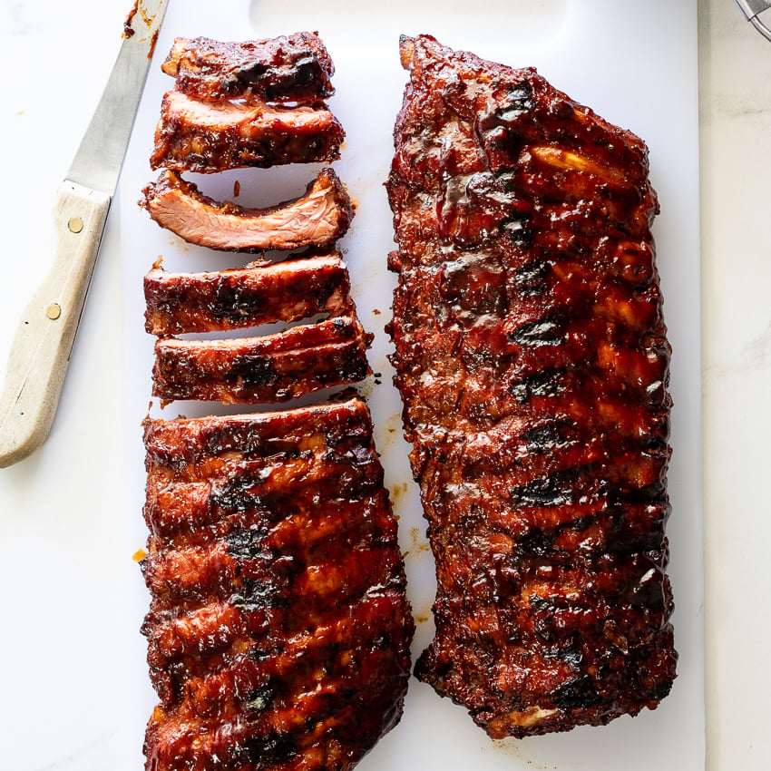
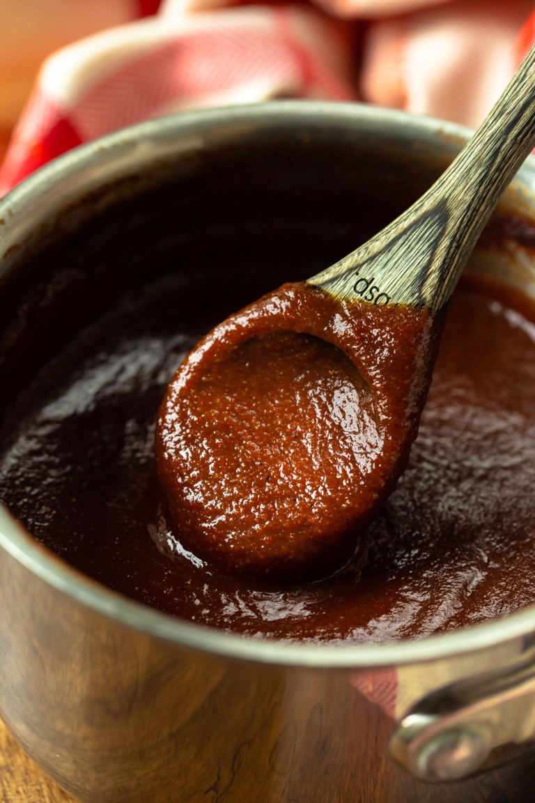

page 1 by Daniel Sandino
Khanna: The World Famous Food Service
Khanna's Values and History
Welcome to Khanna's page, where you can learn about our company values and the history of our global company.
Quick Overview of Khanna's Products
Khanna is a food service company focused on the following foods:
- BBQ Pork Ribs
- BBQ Sauce
- Mac & Cheese

Working Together: Khanna's Values
Let's start with our 5 core business values: respect, integrity, curiosity to learn, amibition, and teamwork.
- Respect: We strive to respect our customers as well as those we work with to create an inclusive and welcoming environemnt.
- Integrity: We value honesty and moral righteousness, 2 traits which allow us to hold each other to a higher standard and thrive against competition.
- Curiosity to learn: We want to work with people who are curious about the world and question how things work so they can strive to learn new things everyday.
- Ambition: Having goals is crucial to the success of Khanna as a company as setting big goals motivates us to succeed.
- Teamwork: Collaborating with those around you for a bigger purpose allows us to help people everyday throughout the world.
From the Beginning: Khanna's History
Khanna has an especially unique story. Let me take you back to 1995. In 1995, Khanna only existed in the minds of the bright founders of today's global known business.
In San Antonio, Texas, David S, Arnold A, Tyler H, James L, and Everett Z were high school students. One day, they noticed that despite BBQ pork ribs prominence throughout
the United States, they lacked the incredible taste and crispiness of great BBQ pork ribs. Working together, the 5 guys developed and tested their own BBQ pork ribs
recipe until it was unbelievably good. After holding a BBQ event after school, Khanna's founders realized the potential of their innovation, as the ribs were so good that they
sold out in less than an hour. By the time they graduated in 1998, Khanna had expanded throughout Texas and was starting to spread to other southern states,
including
Arizona, New Mexico, Louisiana, and Oklahoma. People across the United States were talking about this new startup Khanna and who was behind this genius idea.
However, Arnold, Tyler, James, Everett, and David made sure to maintain founder secrecy, not wanting any unwanted attention. They continued to grow as a company,
opening 500 restaurants in 1999.
Then, in 2005, the 5 founders finally decided to reveal themselves publicly to the world while announcing the addition of their new products: Texas Mac & Cheese and
authentic BBQ sauce. Customers throughout the entire US went crazy when this happened, in disbelief that the founders were so young. However, that didn't stop people from
running into Khanna restaurants to try their new products. By 2010, Khanna had fully expanded in the United States and was starting to open stores in Europe, Asia, and South
America. People were talking about Khanna as word spread. However, although Khanna has grown incredibly since it first started, the focus of the business never
changed.
It has always about serving others and giving people the opportunity to enjoy delicious BBQ pork ribs, BBQ sauce, and Mac & Cheese.
Everyday, the 5 founders wake up
to make people lives a little better, one person at a time, one BBQ pork rib at a time.

To learn more about the pork industry and key trends shaping the future, click on the following link: Download this file
To contact the page creator, click on the following link: Email Daniel Sandino
If you want to learn some new BBQ recipes, click on the following link: Ricardo Cuisine
To learn more about Khanna's other business departments:
If you want to learn more about other aspects of our company, including management, more in depth into our products and services, or check out our customer reviews, you can
find those sections on the main menu to the left of this page!